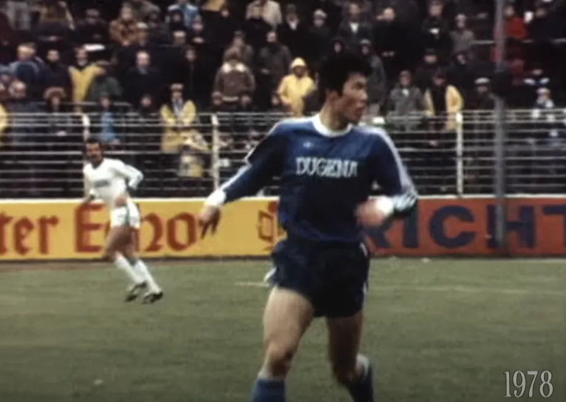
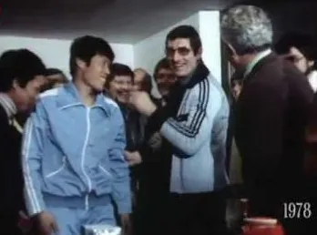

78/79 시즌 분데스리가 데뷔전을 치를 당시 만25세 차범근의 모습
1. 당시 육군과 해군은 30개월 의무 복무조건을 가지고 있었고 차범근은 원래는 해군 축구단에 입단하려 했지만, 공군 축구단 쪽에서 “육군과 같은 30개월 복무 + 대학 교련수업 이수를 하면 3개월 단축”을 적용해 총 27개월만 복무하면 전역시켜 주겠다는 약속을 받고 1976년 입대함.
2. 그리고 시간이 흘러 1978년 12월 전역이 완료된 것으로 판단하고 분데스리가 SV 다름슈타트 98팀과 계약하고 보훔전에서 데뷔전을 치르며 공격 포인트를 쌓고 팀승리에 기여했음.
근데 갑자기 국방부에서 “공군 35개월 중 5개월을 특별히 빼주는 건 안 된다”고 문제를 제기함.
3. 당시 5개월 의가사 면제를 제안했던 공군 측 인물은 사망한 뒤라 공군측에 하소연해도 소득이 없었고, 국방부는 복무기간은 절대 못빼준다는 입장을 고수하는 바람에 차범근은 입단 11일 만에 귀국해서 남은 5개월 복무를 채우는 것을 선택하고 결국 1979년 5월 31일에 만기전역을 해야했다.
4. 병역을 마친 차범근은 1979년 7월 분데스리가 아인라흐트 프랑크푸르트 팀에 입단했으며 입단하자마자 곧바로 UEFA컵(현재의 UEFA 유로파 리그) 2차전에서 프랑크푸르트의 결승골에 결정적인 도움을 기록하며 프랑크푸르트 역사상 최초로 유로파 리그 우승을 안겨주게 된다.
국방부는 안 좆같은 시기가 있나